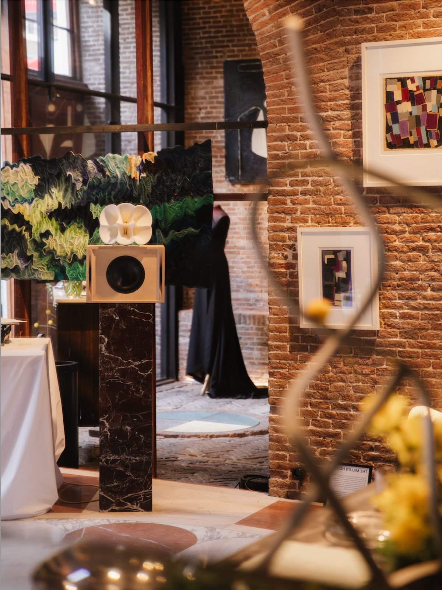
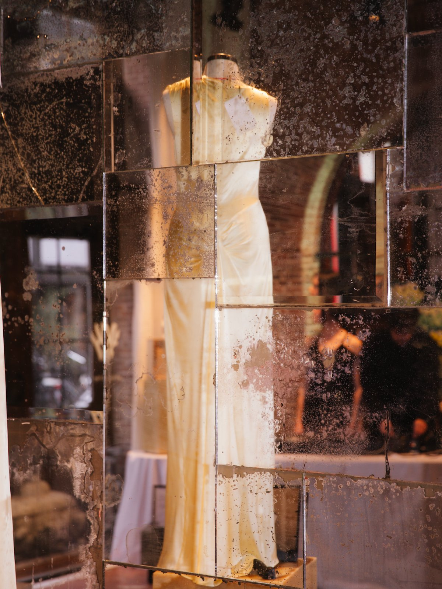
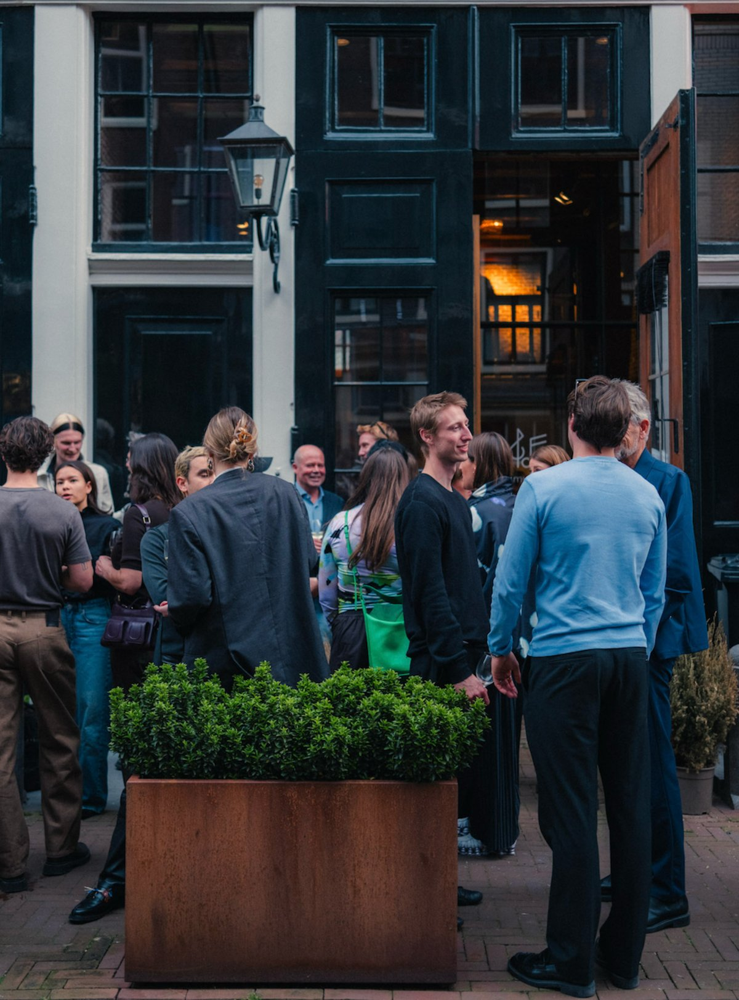
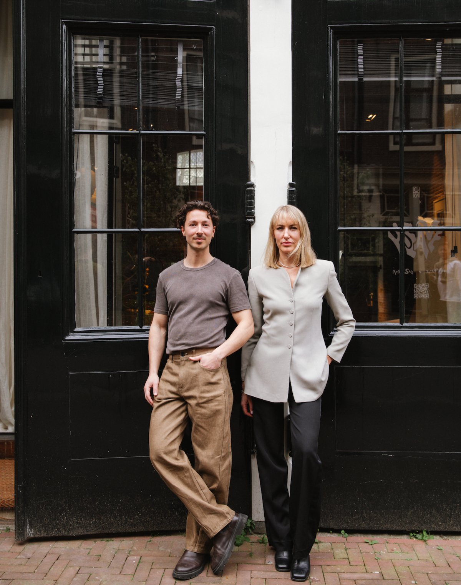

01 / Brands
Discovery is broken
Attention is fragmented. CAC is rising. Wholesale is less predictable. The brands that make things meant to last need time and trust — but the market rewards constant output and pay-to-play reach.
The platforms brands rely on to grow sell attention to the highest bidder. The loudest brands win, not the best ones.
Arcatype is a discovery platform for thoughtful lifestyle brands, online and offline. Every brand in our index is reviewed on craft (how it's made), character (what makes it desirable), and care (how it treats people and planet). If it doesn't pass, it doesn't get in.
For the brands that do: visibility, data on how they compare to others in their category, and access to the kind of audience they can't reach through Instagram anymore.
Attention is fragmented. CAC is rising. Wholesale is less predictable. The brands that make things meant to last need time and trust — but the market rewards constant output and pay-to-play reach.
WGSN costs €25K/year and targets enterprise. There is no mid-market product giving independent brands competitive benchmarks, category trend signals, or digital product data readiness.
Finding brands worth caring about means endless scrolling and algorithm-driven feeds. There is no place built for the consumer who values quality, craftsmanship, and intention over volume.
Brands making exceptional products are at a structural disadvantage against mass brands — and no curated space exists for the people who are design-driven and want to buy with intention.

Index · taste filterBrands are scored across Craft, Character, and Care — anchored to real data sources, not analyst opinion. The result is a standard the industry can reference.

Intelligence · outputsBrands receive competitive benchmarks, market white-space reports, and cross-brand tastemaker affinity data. Recurring value brands will pay for every month.

Offline · exhibitionsCurated brand experiences convert attention into trust and generate the community signals that make the database richer with every edition.
Online and offline reinforce each other. Offline builds community and trust with a highly focused audience. Online delivers the intelligence brands pay for. Both are needed to make the system work.
The first cohort of curated brands is live in the system.
People came for the design, stayed for the connections. First revenue in from partner fees and ticket sales.
First partners already signed. Platform MVP launches alongside the exposition.
First paying brands signed for September edition.
>1,000 email subscribers. Rapidly growing Instagram audience — organic reach built before the platform is live.
First €20k subsidy is in and Corporate VC indicated interest in the follow-on seed round.

Ex VP JamesEdition, Antler, Fundsup (exit). Track record building community and cultural relevance at scale across luxury, technology, and media.
Alexandra has spent the past decade advising companies across innovation, luxury, and media. Originally from Boston, and now living in Amsterdam you can often find her collecting rare print publications, strolling a new design gallery, or brewing a pot of some obscure herbal tea.
Her deep curiosity drives her research & writing practise to explore the future of consumer industries, the realities behind responsible brand building, and how technology's shifts are redefining creative leadership.
Alexandra's perspective is shaped by her work across B2B2C SaaS marketplace infrastructure, experiential productions, and luxury consumer sectors, with a particular focus on how modern brands can embed authentic community and regenerative principles within their organisations.
Co-founder of The Fabric Connector. Former Partnership Lead at CISE Network; co-hosted two cohorts of the Amsterdam Circular Startup Accelerator.
Bas has spent years at the intersection of business and social impact, believing that the brands worth building are also the ones worth finding.
Based in Amsterdam, his perspective is shaped less by algorithms and more by lived experience. Five years ago he stepped away from Instagram entirely, choosing instead to let philosophy books and real cultural encounters do the informing. It's a quieter signal, but a clearer one.
When he's not working, you'll find Bas at the calisthenics park or deep in a conversation about time, attention, and what we choose to do with both.
Currently in conversations with two potential technical co-founders and a creative director to complete the founding team.
A free Listed tier gives all curated brands a presence in the index. The Intelligence tier converts discoverability into a recurring subscription.
82% of consumers rate values alignment as a top purchase driver. Trust has shifted to curated, human recommendation. Resale is becoming a discovery engine — shoppers see what holds value, then return to buy new.
Arcatype is already collecting DPP-specification data. The regulation creates urgency and a captive compliance market — without us having to manufacture the need.
Value for money matters more than ever, and people are getting sharper about what's worth it. Luxury and status are shifting from price tags to real experiences and craftsmanship you can nerd out about.
"Curation and taste scale commercially."
Expanding into wellness, home, and food. We take the thesis further: intelligence, not just commerce.
"Built the anti-Pinterest: no ads, no likes, no noise."
#1 in the App Store across 22 countries. We go further: structured data, not just visual inspiration.
"A dataset so trusted the industry had to reference it."
The marketplace wasn't planned — it emerged. We take the ambition: build the standard, the business follows.
| Platform | Annual price | Human curation | Sustainability | Tastemaker affinity | Independent brands | Multi-category |
|---|---|---|---|---|---|---|
| WGSN | $15K–$25K | — | — | — | — | ✓ |
| BoF Insights | $499–$999 | ✓ | — | — | — | — |
| Good On You | Free | — | ✓ | — | ✓ | — |
| ShopMy | $399+/mo | ✓ | — | ✓ | ✓ | — |
| Arcatype | €600–€9K | ✓ | ✓ | ✓ | ✓ | ✓ |
The white space — no existing platform combines all five: human curation, sustainability scoring, tastemaker affinity signals, independent brand focus, and multi-category coverage. This combination is Arcatype's structural differentiation — and it cannot be replicated by adding a feature to an existing product.
Seed round of €300K follows at month 11 on demonstrated traction.
The Brand Index MVP launches in September — we're building it now. This raise takes Arcatype from database to intelligence platform. The September exposition generates direct revenue from brand participation — it funds itself while proving the model at scale. Goal: validated traction and unit economics to raise a €300K seed in early 2027.